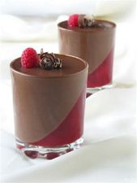

Panna-Cotta

Descripción
Esta receta de panna cotta es la clásica italiana, facilísima, con pocos ingredientes y triunfo
asegurado. Decora a tu gusto para contrastar con el suave sabor de la nata.
Ingredientes:
- 1/2 litro de nata o crema de leche espesa, de la especial para montar(35%MG)
- 200ml de leche
- 120g de azúcar
- 1 palo de canela y cáscara de limón (opcional) o una cucharadita de extrato de vainilla
- 1 sobre de gelatina en polvo (10g) o 6 hojas de gelatina neutra
Elaboración:
-
Hervimos la nata con el azúcar, la canela y limón (o la vainilla).
Apartamos del fuego cuando rompa la ebullición.
-
Calentamos la leche en el microondas y disolvemos la gelatina en la leche caliente.
La añadimos a la nata aún caliente y mezclamos bien.
-
Si usas gelatina en hojas tendrás que hidratarlas en agua fría unos 10 minutos y después
las diluyes muy bien en la leche caliente y lo añades todo al a nata.
-
Colamos bien la mezcla. Una vez colada podemos usar la batidora para integrarla bien.
A mi me da la sensación de que usando la batidora se airea la mezcla y aumenta el sabor.
-
Colocamos en un molde de cake o moldes individuales y enfriamos en la nevera un mínimo
de 3 horas aproximadamente hasta que esté bien cuajada.
Volver al inicio